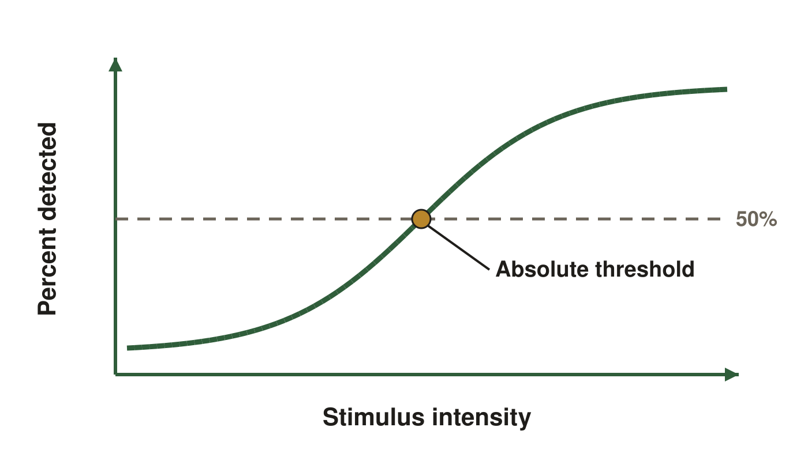
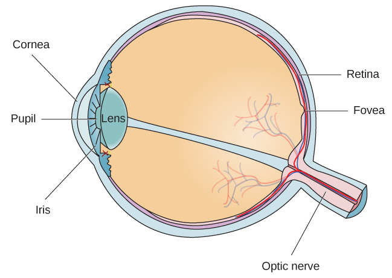
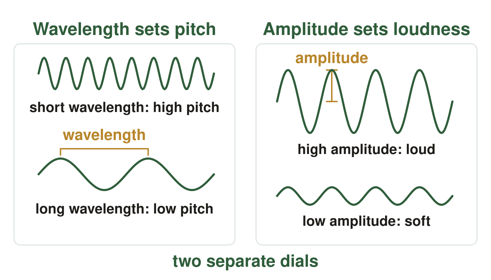
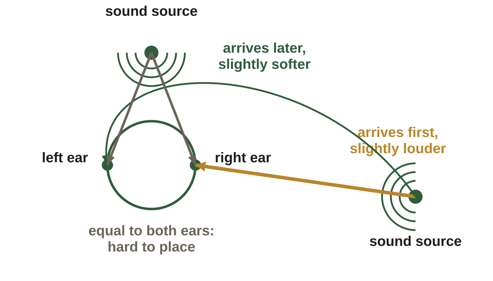
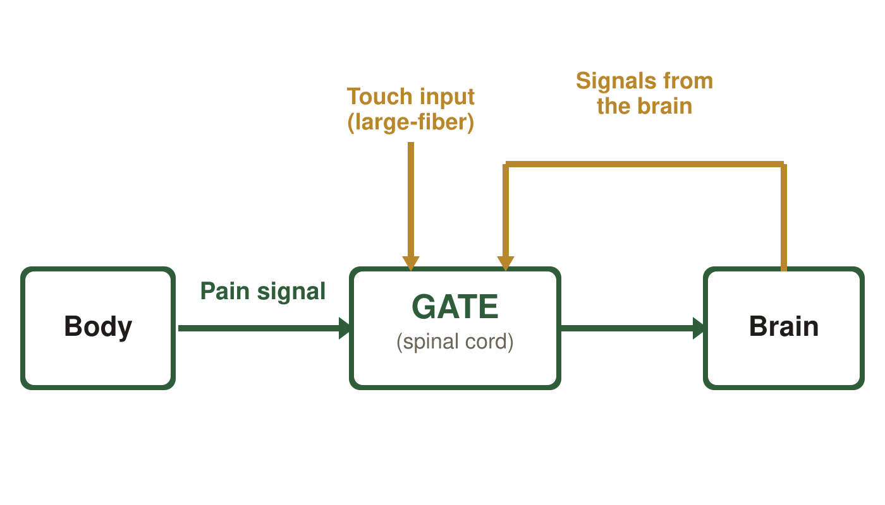
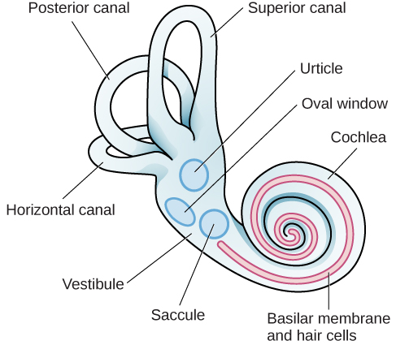
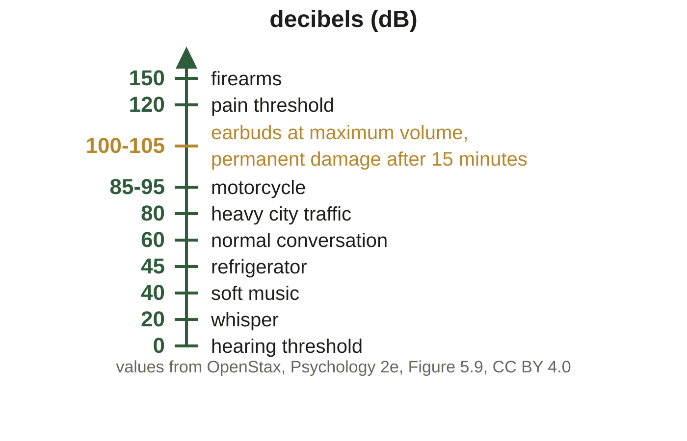

Sensation. These are the same figures as in your Class Notes, in the same order. If a figure in your notes shows as a gray box, use this page instead.
Slide 6. What Sensation Has to Do

The vertical axis is the percent of trials detected. Fifty percent is the level used to locate the threshold on the curve.
Slide 10. How the Eye Builds an Image

Light enters at the cornea and leaves along the optic nerve. OpenStax, Psychology 2e, Figure 5.11, CC BY 4.0
Slide 11. How the Eye Builds an Image (continued)
A solid black dot on the left and a solid black cross on the right, side by side on the same horizontal line on a white ground
Slide 14. Afterimages and Color Deficiency
Fix your eyes on the small white dot for 30 to 60 seconds, then look at the next slide. OpenStax, Psychology 2e, Figure 5.16, CC BY 4.0
Slide 16. When Vision Breaks After the Eye
The occipital lobe, at the back, is where visual information is processed. OpenStax, Psychology 2e, Figure 3.18, CC BY 4.0
Slide 18. Sound Is a Pressure Wave

Wavelength sets pitch on the left, amplitude sets loudness on the right. Illustrative sine waves, not to scale: no frequency or amplitude units are plotted.
Slide 20. Finding Where a Sound Comes From

Overhead view. The gold and green lines are the side source's near and far paths; the gray pair belongs to the source straight ahead.
Slide 37. Pain Is Processed in Two Places

The gate is the theory's name for a control point in the spinal cord, not an anatomical door. The arrow down from the brain is feedback that helps close it.
Slide 40. Balance and Body Position

The three semicircular canals and the two vestibular sacs, named one by one here, sit in the inner ear above the cochlea. OpenStax, Psychology 2e, Figure 5.24, CC BY 4.0
Slide 44. How Loud Is Loud (continued)

Values from OpenStax, Psychology 2e, Figure 5.9, CC BY 4.0, redrawn